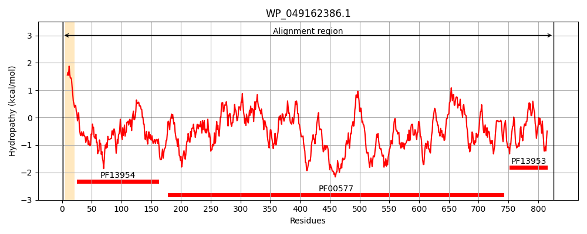
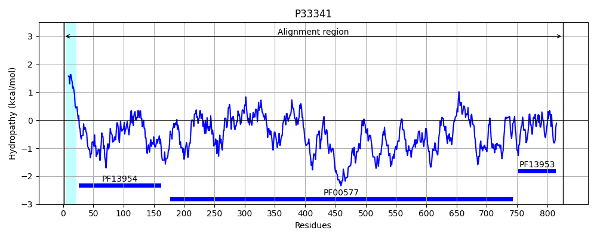
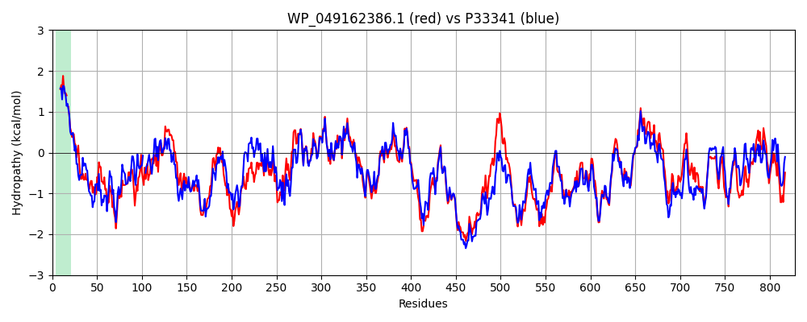

Hit Accession: P33341
Hit TCID: 1.B.11.3.11
Hit Description: gnl|BL_ORD_ID|9905 gnl|TC-DB|P33341|1.B.11.3.11 Outer membrane usher protein YehB OS=Escherichia coli (strain K12) GN=yehB PE=2 SV=1
Mach Len: 828
e:0.000000
Query TMS Count : 1
Hit TMS Count: 1
TMS-Overlap Score: 0.850000
Predicted Substrates:None
BLAST Alignment:
Score: 3130 , Bit scores: 1210 bits, E-value: 0.0e+00, Alignment length: 828, Percentage identity: 68
Query: 1 MLRMTSLALAIIASLFA-EALAAEETFDTNFMFGGMKGVKDSHYQFTDDAPIAGEYNLDVYVNNKWRGKYDLTVKEQPGESCLSHSQLQQLGIKAERLDKKDLAQCITLREAVQGGKYHFDISTLTLELTVPQAFVNELEAGYASPESWDRGVNAFYTSYYASQYYSDYKSAGNNKSTFARFTSGLNLLGWQLHSDASYNNNDSGAGEWKSNTLYLERGFGEIESTLRAGDMYTSGDIFDTVRFRGVRLYRDMQMLPNSRRNFTPIVQGIAQSNALVTIEQNGFVIYQKEVPPGPFAIADLQMAGGGADLDVSIREADGTVTSYLVPFSSVPNMLQAGVSKYDLAAGRSHIEGADRQADFIQGTYQYGLNNLLTLYGGSMLSNHYSAFTLGTGWNTWLGAISVDATQSHSEQDNG-TYDGQSYQVAYSKFLTPTQTRFGLAAYRYSSRDYRTFNDHVWAKNRTHYHRDENDVYDIADYYQYDFGRKNSLSASLSQALPAGYGAISLSALWRDYWGKSGSNKDYQLGYSNTWQRLTYTLSASQTYDEYHHQDKRFNLYFSIPFSWGDDLTAPRRRLNLSNSTTFDNSGFASNNTGLNGIAGSRDQFSYGVNLSHQQQNNETAAGANLTWNAPLATLSGSYSQSSNYTQASGSLSGGVVLWSGGVSLANRLSDTFAILQAPGLEGAYVNGQKYRTTNGKGIVLYDNLTPFRENALMLDVSDSHSTTELKGNRKMVAPYRGAVVVSHFDTDQRKPWLIHARQAAGEPLPFGYEIEDNRGQNVGVVGQGSLLYIRTDTVPSTLKVAVDKANNQYCTITFKQTIDEEQTYVCR 826
MLRMT LA AI+A L EA AAEETFDT+FM GGMK + ++ + D+ P+ G+Y++D+YVN +WRGKY++ VK+ P E+CLS +++LGI ++ QC+T + VQGG Y +DI L+ +VPQA+V ELE+GY PE+W+RG+NAFYTSYY SQYYSDYK++GNNKST+ RF SGLNLLGWQLHSDAS++ ++ G WKSNTLYLERGF ++ TLR GDMYTS DIFD+VRFRGVRL+RDMQMLPNS++NFTP VQGIAQSNALVTIEQNGFV+YQKEVPPGPFAI DLQ+AGGGADLDVS++EADG+VT+YLVP+++VPNMLQ GVSKYDLAAGRSHIEGA +Q+DF+Q YQYG NNLLTLYGGSM++N+Y AFTLG GWNT +GAISVDAT+SHS+QDNG +DGQSYQ+AY+KF++ T TRFGLAA+RYSSRDYRTFNDHVWA N+ +Y RDENDVYDIADYYQ DFGRKNS SA++SQ+LP G+G++SLS LWRDYWG+SGS+KDYQL YSN +R++YTL+ASQ YDE HH++KRFN++ SIPF WGDD++ PRR++ +SNSTTFD+ GFASNNTGL+G GSRDQF+YGVNLSHQ Q NET AGANLTWNAP+AT++GSYSQSS Y QA S+SGG+V WSGGV+LANRLS+TFA++ APG++ AYVNGQKYRTTN G+V+YD +TP+REN LMLDVS S S EL+GNRK+ APYRGAVV+ +FDTDQRKPW I A +A G+ L FGYE+ D G N+GVVGQGS L+IRT+ VP ++ VA+DK CTITF + IDE + Y+C+
Sbjct: 1 MLRMTPLASAIVALLLGIEAYAAEETFDTHFMIGGMKDQQVANIRLDDNQPLPGQYDIDIYVNKQWRGKYEIIVKDNPQETCLSREVIKRLGINSDNFASGK--QCLTFEQLVQGGSYTWDIGVFRLDFSVPQAWVEELESGYVPPENWERGINAFYTSYYLSQYYSDYKASGNNKSTYVRFNSGLNLLGWQLHSDASFSKTNNNPGVWKSNTLYLERGFAQLLGTLRVGDMYTSSDIFDSVRFRGVRLFRDMQMLPNSKQNFTPRVQGIAQSNALVTIEQNGFVVYQKEVPPGPFAITDLQLAGGGADLDVSVKEADGSVTTYLVPYAAVPNMLQPGVSKYDLAAGRSHIEGASKQSDFVQAGYQYGFNNLLTLYGGSMVANNYYAFTLGAGWNTRIGAISVDATKSHSKQDNGDVFDGQSYQIAYNKFVSQTSTRFGLAAWRYSSRDYRTFNDHVWANNKDNYRRDENDVYDIADYYQNDFGRKNSFSANMSQSLPEGWGSVSLSTLWRDYWGRSGSSKDYQLSYSNNLRRISYTLAASQAYDENHHEEKRFNIFISIPFDWGDDVSTPRRQIYMSNSTTFDDQGFASNNTGLSGTVGSRDQFNYGVNLSHQHQGNETTAGANLTWNAPVATVNGSYSQSSTYRQAGASVSGGIVAWSGGVNLANRLSETFAVMNAPGIKDAYVNGQKYRTTNRNGVVIYDGMTPYRENHLMLDVSQSDSEAELRGNRKIAAPYRGAVVLVNFDTDQRKPWFIKALRADGQSLTFGYEVNDIHGHNIGVVGQGSQLFIRTNEVPPSVNVAIDKQQGLSCTITFGKEIDESRNYICQ 826 | Protein Hydropathy Plots: |
|---|
|  |  |
Pairwise Alignment-Hydropathy Plot:
|
|---|
|  |